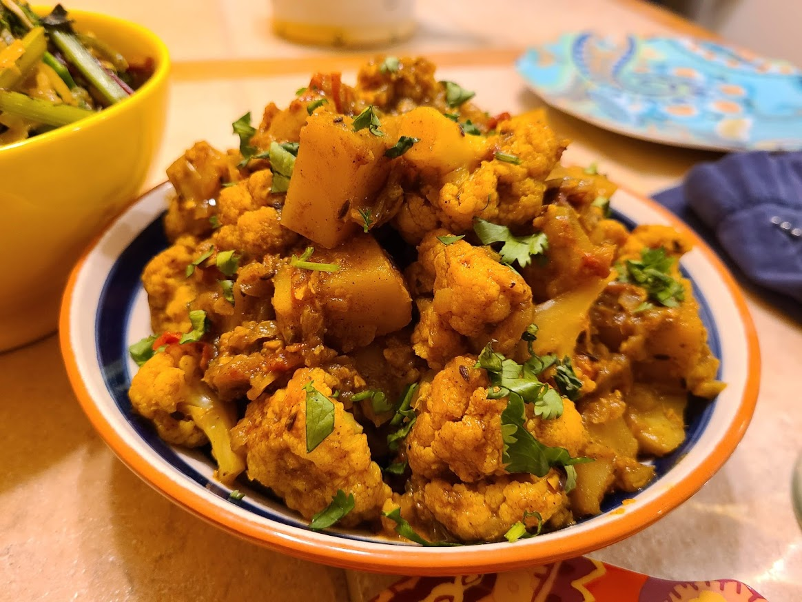

Welcome to Veg Recipes
Explore delicious and vegetarian dishes.
Explore Recipes
Vegetable Pulao
Fragrant basmati rice cooked with mixed vegetables, aromatic spices, and herbs.
View Recipe
Preparation:
- Wash and soak basmati rice for 30 minutes. Drain and set aside.
- In a large pan, heat oil or ghee. Add whole spices (cumin seeds, cloves, cinnamon, bay leaves) and sauté until fragrant.
- Add finely chopped onions and sauté until golden brown.
- Add chopped vegetables (carrots, peas, beans, etc.) and sauté for a few minutes.
- Add soaked rice, water, salt, and any additional spices (such as turmeric, garam masala) according to taste.
- Cover and cook until the rice is tender and all the water is absorbed.
- Garnish with fresh coriander leaves and serve hot.
Masoor Dal
Comforting lentil curry made with red lentils, tomatoes, onions, and a blend of Indian spices.
View Recipe
Preparation:
- Wash the masoor dal (red lentils) thoroughly and soak for 30 minutes.
- In a pressure cooker, heat oil and add cumin seeds. Once they splutter, add finely chopped onions, garlic, and green chilies. Sauté until onions turn golden brown.
- Add chopped tomatoes and cook until they turn soft.
- Add soaked dal, water, salt, turmeric powder, and any other spices according to taste.
- Cover the pressure cooker and cook for about 10-12 minutes or until the dal is fully cooked.
- Garnish with chopped coriander leaves and serve hot with rice or roti.

Aloo Gobi
Classic Indian curry made with potatoes, cauliflower, and a blend of spices.
View Recipe
Preparation:
- Heat oil in a pan and add cumin seeds, chopped onions, and sauté until onions are translucent.
- Add ginger-garlic paste and cook until the raw smell disappears.
- Add diced potatoes and cauliflower florets. Stir well to coat them with the spices.
- Add turmeric powder, coriander powder, cumin powder, red chili powder, and salt. Mix well.
- Cover and cook until the potatoes and cauliflower are tender, stirring occasionally.
- Garnish with chopped coriander leaves and serve hot with rice or roti.

Palak Paneer
Creamy spinach curry cooked with paneer (Indian cottage cheese) and aromatic spices.
View Recipe
Preparation:
- Blanch spinach leaves in boiling water for 2 minutes. Drain and immediately transfer them to ice-cold water.
- Blend blanched spinach leaves into a smooth puree. Set aside.
- Heat oil or ghee in a pan and add cumin seeds, chopped onions. Sauté until onions are golden brown.
- Add ginger-garlic paste and cook until the raw smell disappears.
- Add the spinach puree and cook for a few minutes.
- Add spices like garam masala, coriander powder, turmeric, and salt. Mix well.
- Add cubed paneer and cook until heated through.
- Finish with a splash of cream (optional), garnish with fresh cream and serve hot with naan or rice.
Chana Masala
Spicy chickpea curry simmered in a rich tomato-based sauce with onions, garlic, and ginger.
View Recipe
Preparation:
- Heat oil in a pan and add cumin seeds, chopped onions, and sauté until onions are golden brown.
- Add minced garlic and ginger, and cook until fragrant.
- Stir in chopped tomatoes, tomato paste, and cook until tomatoes are softened.
- Add spices like garam masala, coriander powder, turmeric, chili powder, and salt. Mix well.
- Add boiled chickpeas and stir to coat them with the spices.
- Pour in water or vegetable broth to achieve desired consistency and let it simmer for 10-15 minutes.
- Garnish with fresh cilantro leaves and serve hot with rice or naan.

Veg Biryani
Fragrant rice dish cooked with mixed vegetables, herbs, and biryani spices, layered with fried onions and mint leaves.
View Recipe
Preparation:
- Wash and soak basmati rice in water for 30 minutes. Drain and set aside.
- In a large pot, heat oil or ghee. Add whole spices (cumin seeds, cardamom, cloves, cinnamon) and sauté until fragrant.
- Add sliced onions and sauté until golden brown.
- Add chopped mixed vegetables (carrots, beans, peas, potatoes) and sauté for a few minutes.
- Add ginger-garlic paste, green chilies, and sauté until the raw smell disappears.
- Add biryani masala, turmeric powder, red chili powder, and salt. Mix well.
- Add soaked rice and gently mix with the vegetables.
- Pour water or vegetable broth over the rice and vegetables, ensuring the rice is submerged.
- Cover and cook on low heat until the rice is cooked and all the water is absorbed.
- Once done, fluff the biryani gently with a fork, garnish with fried onions, chopped mint leaves, and coriander leaves.
- Serve hot with raita or any desired side dish.
About Us
We are passionate about vegetarian cooking and strive to share delicious recipes with everyone.
Our Team
- John Doe - Founder
- Jane Smith - Head Chef
- Michael Johnson - Recipe Developer
Our Mission
Our mission is to promote healthy and sustainable eating habits through vegetarian cooking, and to inspire people to explore the diverse world of plant-based cuisine.